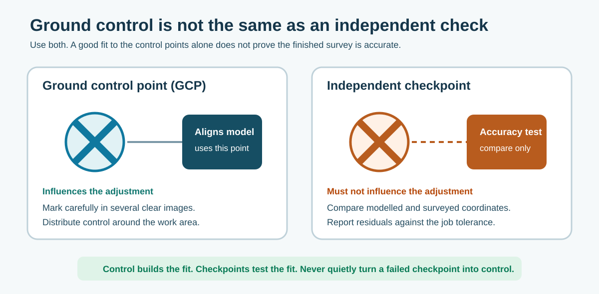
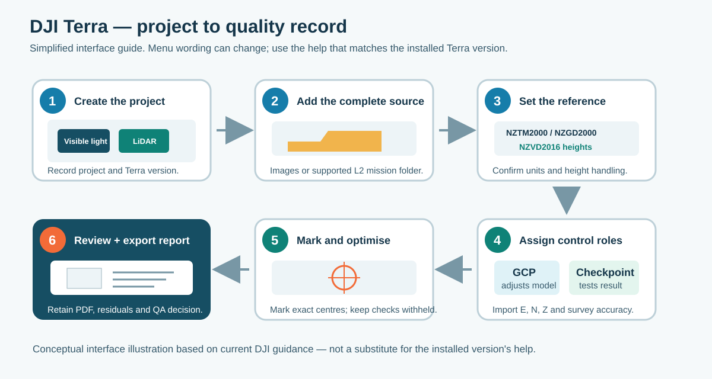
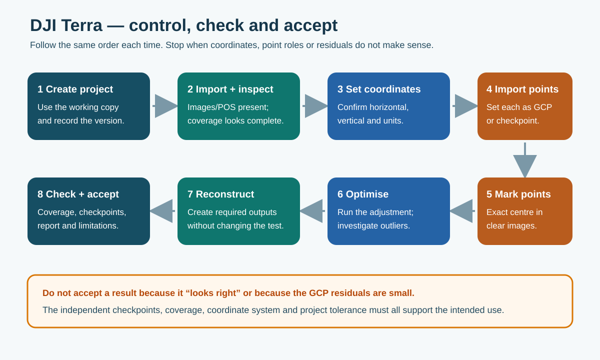

8. DJI Terra processing and control
8.1 Control and checkpoints
A GCP influences the aerial-triangulation adjustment. An independent checkpoint is withheld from that adjustment and tests the finished result.

Figure 18. GCPs help align the model. Checkpoints provide the independent accuracy test.
Do not change a failed checkpoint into a GCP simply to improve the report. Investigate the survey coordinate, target movement, image marking, data quality and model behaviour.
Permanent plates may be reused as GCPs in each repeat project, but inspect them against the reference photographs before every capture. Resurvey after flooding, grading, impact, replacement or suspected movement. If all six plates are used as GCPs, use separate surveyed checkpoints; a point cannot independently verify the model that it helped fit.
8.2 Create the Terra project

Figure 19. Simplified interface guide based on current DJI guidance. Use the help matching the installed Terra release.
- Create the project inside
04_Terra_Projectand record the DJI Terra version. - Choose only the reconstruction/output types required by the job.
- Import the original images or complete supported mission dataset from the working copy.
- Check positions, camera/payload information and coverage.
- Set and record the output coordinate system, height handling and units.
- Save the project before importing control.
Manufacturer guidance: menus change between DJI Terra versions. Use the current manual and help matching the installed release.
8.3 Import, mark and optimise control
DJI's current guidance uses this point order:
Point name, X/Easting, Y/Northing, Z/Height, horizontal accuracy, vertical accuracy

Figure 20. Use the same control-to-acceptance sequence for every photogrammetry project.
- Check IDs, coordinates, height, units, decimal places and Easting/Northing order before import.
- Confirm each point plots near the correct place. Stop if it is kilometres away, swapped or at the wrong height.
- Set every point deliberately as GCP or checkpoint.
- Run the initial aerial triangulation.
- Mark the exact surveyed centre in several clear, well-distributed images. Use assisted marking as a checked aid, not an unreviewed result.
- Mark the checkpoints carefully but keep them independent.
- Optimise, inspect errors and correct genuine marking mistakes.
- Record the reason for any excluded point or changed role.
- Run the required reconstruction and export the quality report and residual information.
DJI guidance is not entirely uniform on count: the FAQ recommends at least four GCPs in a target area, while the newer accuracy guide recommends an even distribution of at least five GCPs and five checkpoints for an actual project, with more for larger areas. These are manufacturer starting points, not a universal BOPRC specification. Site geometry, tolerance and the survey lead's approved control plan remain controlling.
8.4 Reusable templates
Proposed BOPRC improvement — approval and vendor consultation required: build controlled DJI Terra templates for common Matrice 4E photogrammetry and M350/L2 work.
Each template should state:
- aircraft/payload and intended output;
- input and output coordinate/height system;
- reconstruction settings and output formats;
- control/checkpoint import convention;
- naming and storage location;
- expected QA checks; and
- software version and date validated.
Test templates on known data and review them after material DJI Terra updates. A template speeds up setup; it does not remove the need to check each project.
The reusable master is the controlled site-coordinate file/register: point ID, E/N/Z, accuracy, CRS, vertical datum/height type, survey method/date, reference photographs and condition history. A Terra project or marked-point file may help within a supported workflow, but do not assume image marks transfer correctly to photographs captured on another date. Each campaign still needs its own role check, marking review, optimisation and checkpoint acceptance.
8.5 Check the independent points
The stopbank spray mark from Section 5 becomes a measured check—not a visual judgement.
- Import its surveyed E/N/Z and assign it as a checkpoint before optimisation.
- Mark the exact target centre in the relevant images. Terra predicts the checkpoint position from the reconstruction without using it to fit the model.
- Record the E, N and height residuals and the combined checkpoint RMSE. Investigate outliers; do not hide them by changing roles.
- After export, open the orthomosaic and DEM/DSM or LiDAR surface in ArcGIS Pro with the surveyed checkpoint layer. Sample the final surface elevation and calculate
model Z − rover Z; compare plan position where XY accuracy is required. - Assess the distributed checkpoint set against the project tolerance and retain the result in the acceptance record.
Terra checks the reconstruction. ArcGIS Pro checks the actual final deliverable after classification, interpolation, rasterisation and export. Use both for an engineering surface.
8.6 Read and retain the quality report
Export the final Terra quality report as PDF and retain it in 05_QA_and_Metadata with the checkpoint residuals. The report is processing evidence; it does not by itself approve the output.
| Report item | What it means |
|---|---|
| GSD, pixel size or point density | Detail or sampling resolution—not proof of accuracy. |
| Calibrated images and coverage | Whether the planned imagery reconstructed successfully. |
| RTK FIX / POS status | Quality of aircraft/image positioning—not an independent check of the surface. |
| Reprojection error RMS | Internal image-fit quality in pixels—not final ground accuracy. |
| Georeferencing RMSE | Agreement with recorded positions/control; useful, but not a substitute for checkpoints. |
| GCP residuals | Fit to points used to adjust the model. |
| Checkpoint residuals / RMSE | Independent accuracy evidence when the points were withheld from optimisation. |
| Warnings, failed images or trajectory/IMU issues | Items to investigate and document before acceptance. |
For LiDAR, review the flight parameters, trajectory/IMU quality, point-cloud warnings and checkpoint RMSE using the labels in the installed Terra version. Create a short BOPRC QA/metadata record that translates the technical report into: purpose, tolerance, result, exclusions, accepted use, limitations, reviewer and date.